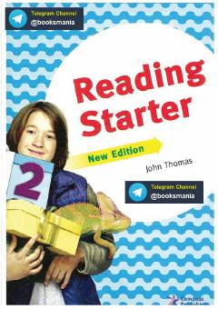

RSBoshlang'ich darajadagi o'quvchilar uchun ingliz tilida o'qishni o'rgatuvchi qo'llanma.
Ushbu kitob boshlang'ich darajadagi o'quvchilar uchun ingliz tilida o'qish ko'nikmalarini rivojlantirishga qaratilgan qiziqarli matnlar va mashqlarni o'z ichiga oladi. Har bir bo'lim kundalik mavzulardagi qisqa hikoyalar hamda tushunishni tekshiruvchi topshiriqlardan iborat. Qo'llanma yosh o'quvchilar va til o'rganishni endi boshlaganlar uchun mo'ljallangan.